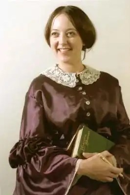
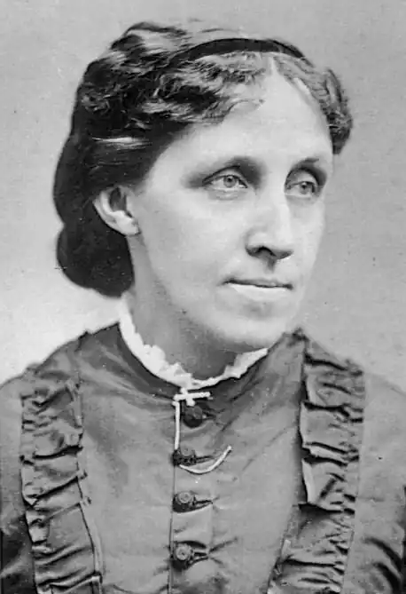

29.11.1832 року в Філадельфія, Пенсільванія, США — 06.03.1888 року в Бостоні.
Американська письменниця; найбільше відома повістями ‘Маленькі жінки' (‘Little Women'), ‘Маленькі чоловіки' (‘Little Men") і "Хлопчики Джо' (‘Jo's Boys').
Луїза – дочка відомого просвітителя і письменника-трансценденталиста Амоса Бронсона Олкотта (Amos Bronson Alcott) і його дружини Ебігейл Мей Олкотт (Abigail May Alcott). З'явилася на світ дівчинка точно в 33-й день народження свого батька. Була Луїза другий із чотирьох дочок Амоса і Ебігейл. В 1834-му Олкотты переїхали до Бостона (Boston). У штаті Массачусетс (Massachusetts) Амос Олкотт заснував експериментальну школу і разом з Ральфом Уолдо Емерсоном (Ralph Waldo Emerson) і Генрі Девід Торо (Henry David Thoreau) прилучився до Трансцендентальному Клубу (Transcendental Club). У 1840-му Олкотты знову переїхали – цього разу на земельну ділянку у Конкорд, Массачусетс (Concord, Massachusetts). В період з 1843-го по 1844-ї сім'я складалася в суспільстві ‘Utopian Fruitlands'. Освіта Луїза отримувала переважно вдома; главнымее вчителем був батько, проте іноді йому на допомогу приходили і інші відомі особистості – начебто згаданих вже Торо, Емерсона, Натаніеля Готорна (Nathaniel Hawthorne) і Маргарет Фуллер (Margaret Fuller). Ставши дорослою, Олкотт стала затятою аболиционисткой і феміністкою; в 1847-му в будинку Олкотт тиждень ховався раб. Тяжке стан сімейного бюджету змусило Луїзу вийти на роботу в порівняно молодому віці; вона встигла побути вчителькою, швачкою, гувернанткою, домробітницею і письменницею. Першу свою книгу – ‘Квіткові казки' (‘Flower Fables') – Луїза опублікувала в 1849-му; в цю книгу увійшла добірка казок, написаних Еллен Емерсон (Ellen Emerson), дочкою Ральфа Емерсона. Деякий час Олкотт писала для ‘Atlantic Monthly'. Під час Громадянської війни Луїза шість тижнів працювала медсестрою. У цей час Олкотт писала додому надзвичайно цікаві листи – пізніше опубліковані окремим збірником. Ця збірка вперше привернув до Луїзі увагу критиків; закріпила успіх вона повістю ‘Настрої' (‘Moods'), також заснованої на особистому досвіді. Деякий час Луїза публікувала надзвичайно пристрасні й енергійні твори під псевдонімом ‘А. М. Барнард' (A. M. Barnard). Головні герої цих творів відрізнялися неймовірною силою волі і активно добивалися бажаного, незважаючи ні на які труднощі. Писала Олкотт і для дітей; власне, ці її творіння були прийняті настільки тепло, що до ‘дорослої' літературі Луїза вирішила не повертатися. Справжня слава до Олкотт прийшла після того, як ‘Roberts Brothers' опублікували першу частину "Маленьких жінок'; сталося це в 1868-м. Друга частина вийшла в1869-м; у 1871 році була опублікована книга ‘Маленькі чоловіки'. Завершила ‘Сагу сім'ї Марч' (‘March Family Saga') книга ‘Хлопчики Джо'. Цікаво, що якщо перші книги були в якійсь мірі засновані на особистому досвіді письменниці (власне, образ Джо Марч Луїза явно писала з себе самої), далі шляху героїні та її прототипу розійшлися досить радикально; так, на відміну від Джо Марч Луїза Олкотт заміж так і не вийшла. Активно писати Луїза продовжувала до кінця своїх днів; не зупинили її навіть досить серйозні проблеми зі здоров'ям. Чим були викликані ці проблеми, зараз сказати важко; довгий час біографи письменниці грішили на отруєння ртуттю, проте останнім часом більшою популярністю користується версія про аутоімунному захворюванні – імовірно, вовчаку. Луїза померла 6-го березня 1888 року в Бостоні.